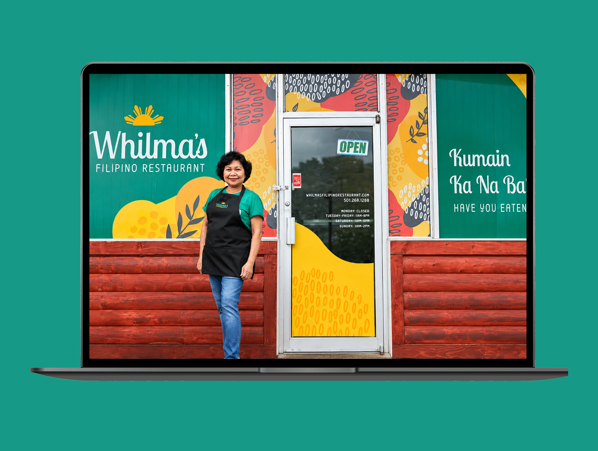
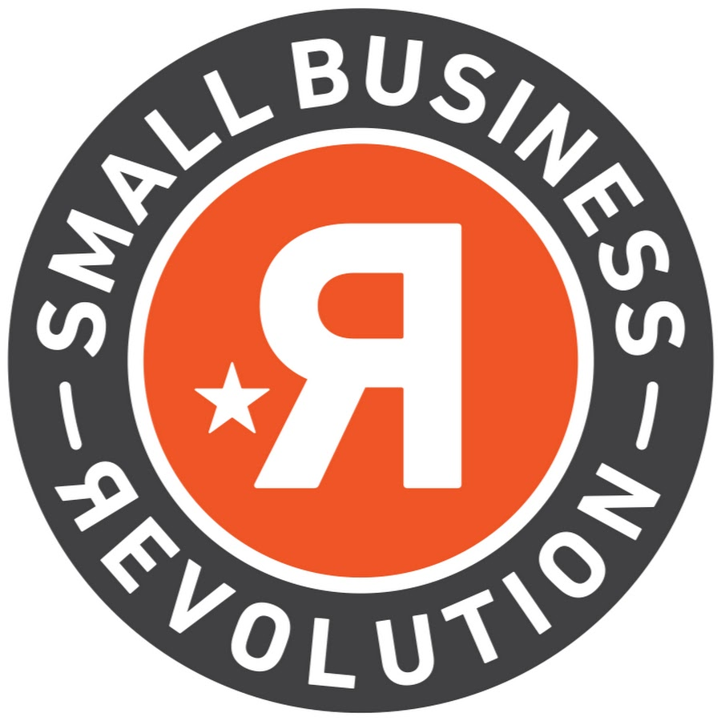
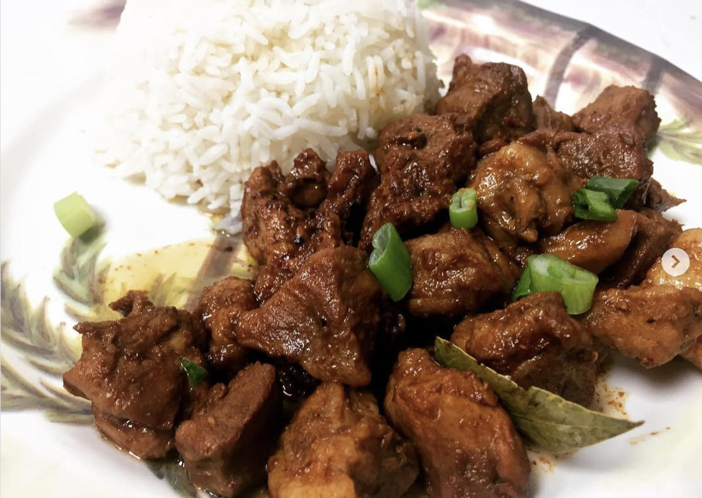
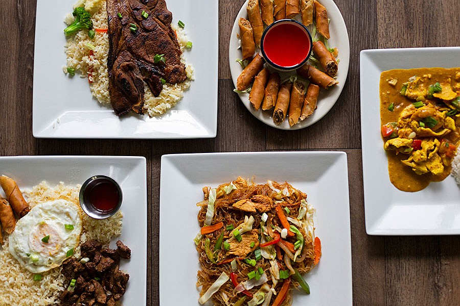
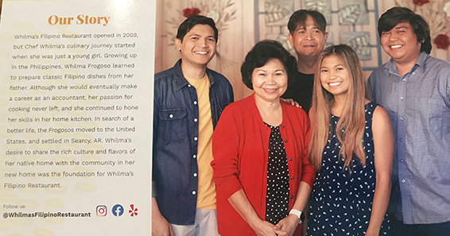

Audience Growth
Tripled our social media audience by analyzing engagement trends and developing content that resonated with our community.
Growing a family-owned restaurant through digital marketing, cultural storytelling, and customer engagement.

Whilma's Filipino Restaurant is my family's restaurant in Searcy, Arkansas, where we share a piece of our Filipino heritage with the local community.
My role began in digital marketing, where I focused on growing our online presence, reaching new customers, and building a stronger connection with our community through social media.
Following the restaurant's feature on Small Business Revolution, my responsibilities expanded beyond marketing to include pricing, customer insights, and operational costs. This experience gave me a deeper understanding of how marketing and financial decisions work together to support the growth of a small business.
VISIT WEBSITE ↗Connecting digital marketing initiatives with measurable business outcomes.
Tripled our social media audience by analyzing engagement trends and developing content that resonated with our community.
Contributed to a 40% increase in foot traffic through targeted marketing efforts that strengthened brand awareness and attracted new customers.

Small Business RevolutionSocial Media · Marketing Analytics · Customer Engagement
Managed Facebook and Instagram marketing initiatives focused on strengthening brand awareness, connecting with customers, and sharing Filipino culture through food and storytelling. Used engagement data to refine content strategies and posting schedules.
Digital Presence · Customer Journey
The restaurant's digital presence extends across its website and online food-ordering platforms, providing customers with accessible ways to discover the brand, explore its menu, and connect with the business.
Brand discovery and menu exploration
Digital menu and customer access
Campaign Strategy · Business Collaboration
SEASON 4 · EPISODE 2 · 2019
Whilma's Filipino Restaurant was featured in Season 4 of Small Business Revolution, a national television series focused on helping small businesses through marketing, branding, financial guidance, and business transformation.
I supported digital marketing efforts surrounding the restaurant's Small Business Revolution journey. The experience provided opportunities to collaborate with production and business advisory teams and understand how marketing and business operations contribute to sustainable growth.
Season 4 · Searcy, Arkansas · 2019
Local Television Coverage
WATCH ON YOUTUBE ↗Local Television Coverage
WATCH ON YOUTUBE ↗Local & National Media Coverage
From local newspaper coverage to national culinary publications, Whilma's has received recognition for sharing authentic Filipino cuisine and culture with a wider audience.

Featured as the Arkansas restaurant in a nationwide guide to Filipino cuisine.
READ FEATURE ↗
Local newspaper coverage introducing readers to Whilma's and its Filipino cuisine.
READ ARTICLE ↗
Arkansas lifestyle magazine coverage highlighting the restaurant and its cultural identity.
VIEW COVERAGE ↗Independent media coverage of Whilma's Filipino Restaurant. Article content belongs to the respective publishers.
Beyond digital marketing, my experience with the restaurant provided opportunities to understand the financial and operational considerations behind running a small business.
These experiences helped me connect customer demand and marketing decisions with pricing, operating costs, and long-term business sustainability.
Understanding the relationship between customer demand, pricing, and product value.
Considering ingredient costs and their relationship to menu profitability.
Understanding staffing needs, operating expenses, and business efficiency.
My responsibilities brought together digital marketing, content strategy, marketing analytics, customer engagement, and business strategy to support the growth of a family-owned restaurant.
This experience shaped my understanding of how customer insights, marketing performance, and business decisions work together to create sustainable growth.